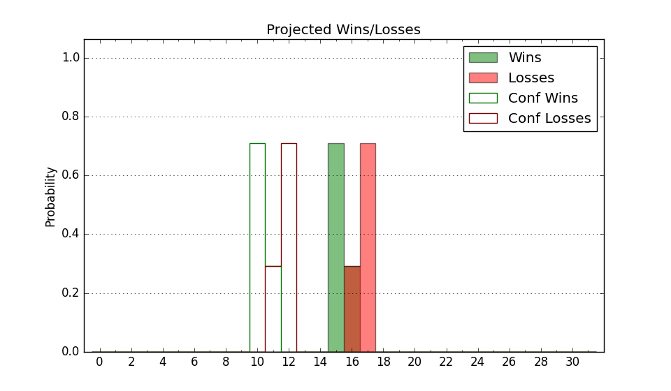

| Home | Game Probabilities | Conferences | Preseason Predictions | Odds Charts | NCAA Tournament |
| City: | Chattanooga, Tennessee | |
| Conference: | Southern (5th)
| |
| Record: | 10-11 (Conf) 15-16 (Overall) | |
| Ratings: | Comp.: -1.0 (183rd) Net: -1.0 (183rd) Off: 106.4 (113th) Def: 107.5 (255th) SoR: 0.0 (148th) |
| Remaining | ||||||
|---|---|---|---|---|---|---|
| Date | Opponent | Win Prob | Pred. | |||
| 3/6 | (N) Furman (97) | 28.8% | L 75-81 | |||
| Previous | Game Score | |||||
| Date | Opponent | Win Prob | Result | Off | Def | Net |
| 11/7 | @College of Charleston (77) | 13.0% | L 78-85 | 4.8 | 4.4 | 9.2 |
| 11/15 | @Mississippi (111) | 20.9% | L 58-70 | -11.0 | 5.2 | -5.8 |
| 11/23 | Lipscomb (161) | 61.0% | L 66-72 | -10.9 | -3.3 | -14.2 |
| 11/26 | Murray St. (215) | 70.7% | W 69-66 | -5.2 | 7.7 | 2.5 |
| 11/30 | @Tennessee Tech (269) | 54.5% | W 81-74 | 8.6 | -0.9 | 7.8 |
| 12/3 | @Gardner Webb (190) | 36.1% | W 82-71 | 12.1 | 5.5 | 17.6 |
| 12/6 | Milwaukee (219) | 71.4% | W 88-76 | 13.5 | -10.1 | 3.4 |
| 12/15 | @Middle Tennessee (118) | 22.0% | W 82-73 | 21.3 | 1.4 | 22.7 |
| 12/18 | Belmont (119) | 49.0% | L 79-83 | -2.3 | -3.7 | -5.9 |
| 12/21 | @Georgia (169) | 32.4% | L 65-72 | 0.7 | 3.1 | 3.8 |
| 12/29 | @The Citadel (334) | 72.2% | L 68-76 | -8.2 | -11.5 | -19.6 |
| 12/31 | @Mercer (221) | 42.7% | W 80-51 | 15.0 | 29.3 | 44.3 |
| 1/4 | @UNC Greensboro (114) | 21.5% | L 61-73 | -4.3 | -0.6 | -4.9 |
| 1/7 | VMI (354) | 93.3% | W 85-78 | 3.5 | -15.4 | -12.0 |
| 1/11 | Western Carolina (233) | 75.4% | W 95-76 | 33.8 | -6.1 | 27.7 |
| 1/14 | @Samford (141) | 27.0% | L 74-75 | 7.9 | 0.6 | 8.5 |
| 1/18 | Furman (97) | 42.7% | L 69-77 | -10.7 | 2.1 | -8.6 |
| 1/21 | East Tennessee St. (250) | 77.6% | L 62-78 | -26.0 | -10.5 | -36.5 |
| 1/25 | Wofford (243) | 76.8% | L 80-85 | -7.1 | -10.3 | -17.4 |
| 1/28 | @East Tennessee St. (250) | 50.4% | W 73-64 | 6.3 | 6.1 | 12.3 |
| 2/1 | @Furman (97) | 17.9% | L 58-79 | -18.0 | 2.0 | -16.0 |
| 2/4 | @Western Carolina (233) | 47.4% | L 68-83 | -14.6 | -5.4 | -20.0 |
| 2/8 | The Citadel (334) | 89.8% | W 82-63 | -3.0 | 6.5 | 3.5 |
| 2/11 | Mercer (221) | 71.8% | W 73-56 | 4.6 | 14.2 | 18.8 |
| 2/15 | @VMI (354) | 80.3% | W 78-58 | 2.1 | 14.8 | 16.9 |
| 2/18 | UNC Greensboro (114) | 48.3% | L 76-93 | 4.7 | -33.1 | -28.4 |
| 2/22 | Samford (141) | 55.8% | L 70-75 | -22.0 | 7.1 | -14.8 |
| 2/25 | @Wofford (243) | 49.3% | L 74-86 | -0.1 | -20.4 | -20.5 |
| 3/3 | (N) VMI (354) | 88.2% | W 92-72 | 9.8 | 3.0 | 12.8 |
| 3/4 | (N) Samford (141) | 40.6% | W 85-82 | 6.4 | 1.1 | 7.5 |
| 3/5 | (N) Wofford (243) | 64.2% | W 74-62 | -3.9 | 18.9 | 15.0 |
| Stats & Trends | |||||
|---|---|---|---|---|---|
| Current | Day | Week | Month | Season | |
| Composite | -1.0 | +0.5 | +1.1 | -1.1 | -4.9 |
| Comp Rank | 183 | +7 | +12 | -12 | -62 |
| Net Efficiency | -1.0 | +0.5 | +1.1 | -1.0 | -- |
| Net Rank | 183 | +7 | +12 | -7 | -- |
| Off Efficiency | 106.4 | -0.1 | +0.4 | -1.7 | -- |
| Off Rank | 113 | -- | +10 | -44 | -- |
| Def Efficiency | 107.5 | +0.6 | +0.7 | +0.7 | -- |
| Def Rank | 255 | +16 | +17 | +32 | -- |
| SoS Rank | 233 | -3 | -19 | -55 | -- |
| Exp. Wins | 15.3 | +1.3 | +3.3 | +1.7 | -1.4 |
| Exp. Conf Wins | 10.3 | +1.3 | +3.3 | +1.7 | -0.5 |
| Conf Champ Prob | 0.0 | -- | -- | -- | -19.2 |

| Advanced Stats | ||
|---|---|---|
| Stat | Value | Rank |
| Off Eff FG % | 0.526 | 104 |
| Off Ast Ratio | 0.156 | 91 |
| Off ORB% | 0.258 | 211 |
| Off TO Rate | 0.158 | 211 |
| Off FT Ratio | 0.333 | 130 |
| Def Eff FG % | 0.513 | 195 |
| Def Ast Ratio | 0.136 | 129 |
| Def ORB% | 0.264 | 164 |
| Def TO Rate | 0.133 | 317 |
| Def FT Ratio | 0.299 | 143 |